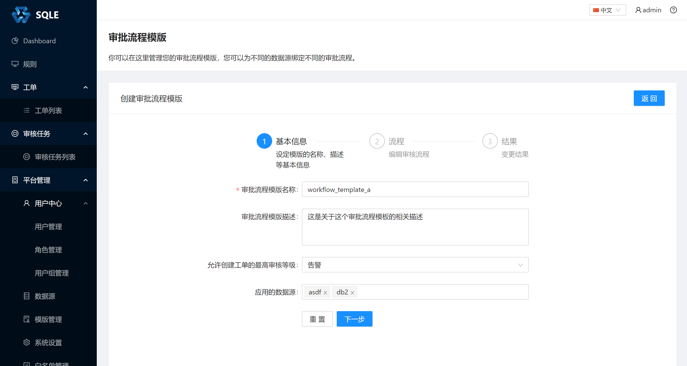
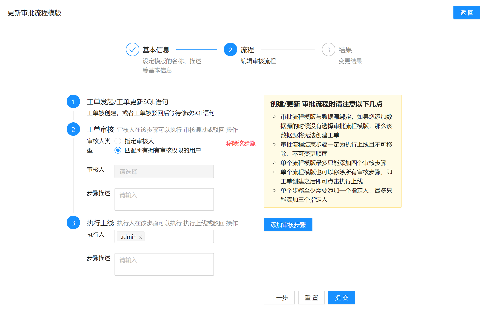

流程模板管理（企业版功能）
工作流要解决的主要问题是：为实现某个业务目标，在多个参与者之间按某种预定规则自动传递文档、信息或者任务。
SQLE 使用工作流来解决 SQL 上线的流程化问题。在 SQLE 中称为流程模板。
创建流程模板
在左侧导航栏的「平台管理」中的「流程管理」页面中，点击「创建流程模板」，填写流程模板相关信息。
步骤 1：

在这一步中, 指定了流程的基本信息
- 新建的流程名称为
workflow_template_a, 这个名称在流程模板中是唯一的 - 审核流程模板的描述
- 应用这个流程的工单必须所有SQL都没有触发大于
告警级别的规则才可以提交工单 asdfdb2这两个数据源将会使用此审核流程
步骤 2：
在这一步中，添加了两个审核步骤：
- 工单创建后，流转到 DBA 初审
- DBA 初审后，流转到部门领导复审
最后，部门领导复审后，流转到 DBA 执行上线。
部分选项说明
- 工单审核步骤中如果审核人类型为 "匹配所有拥有审核权限的用户" , 则创建工单时所有拥有对应数据库工单审核权限的用户(组)都会被指定为此步审核者, 如果创建工单时没有任何用户拥有此数据源工单审核权限, 则工单审核者将会被指定为admin
- 当审核人类型为 "指定审核人" 时, 指定的审核人可以没有工单审核权限
默认审核模板
- 工单发起
- 由拥有审核权限的用户进行审核
- 由admin执行上线
